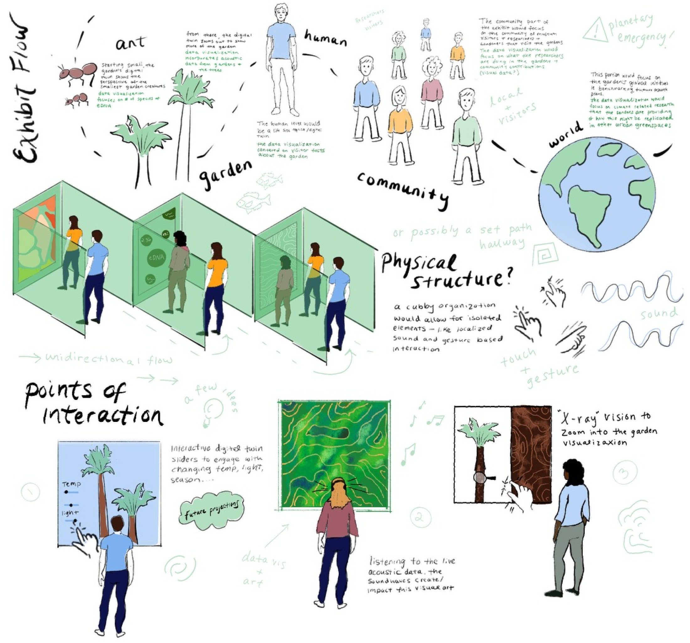
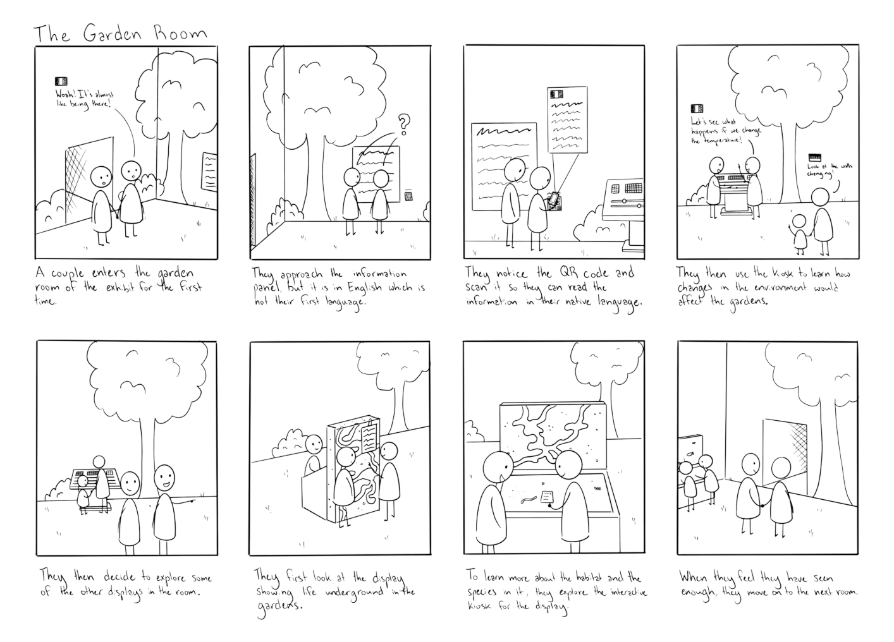
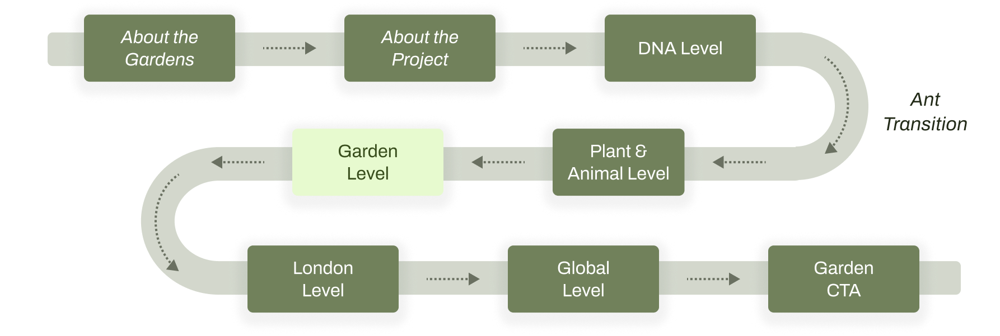
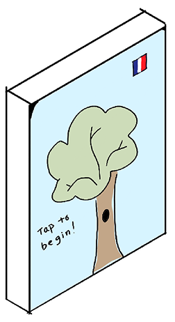
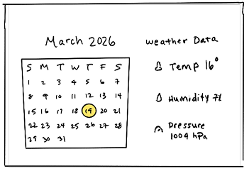
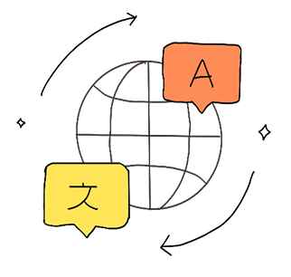

Once we had the broad strokes (a permanent, research led exhibit with a micro-to-macro narrative aimed at international visitors) it was time to get into the specifics. What would actually be in this exhibit? What would visitors touch, see, and do?
We used a sequence of ideation and specification tools to work this out, each one building on the last.
From Crazy 8s to Sketchnotes
First, a round of Crazy 8s with the aim of generating specific interactions, content types, and moments within rooms. From there, we used the ideas from Crazy 8s to create sketchnotes. Sketchnotes pushed me to slow down and think through a single idea more fully by combining text, image, and annotation in a way that surfaces more details than the Crazy 8s sketches. My sketchnotes helped me work out the logic of the exhibit's interactive elements like an acoustic data visualization, or touch screen interaction with garden habitat elements.

My SketchnoteMapping the Journey
We then created storyboards and a user journey map to understand how all these interactions would connect. Mapping the journey from a visitor walking into the exhibit to walking back out made the gaps visible. What specifically were the different rooms and spaces within the exhibit? What interactions would inhabit each one?
Those gaps fed directly into our specification session, where we sat down as a team and defined every room in the exhibit. Our goal was to connect the museum, the gardens, and the community by taking visitors on a journey, from micro to macro, through real-time data and ending with a call to action to go outside and see the gardens for themselves.


Exhibit Flow — Room by RoomThe Garden Room
At this time, we also decided to focus the majority of our design efforts around the central garden room. Through looking back at our moodboards, field visit notes, and lengthy discussion, we came up with the three core interactive components for the garden room: a QR code language selector, a weather data control panel, and a set of habitat kiosks pairing physical models with digital exploration tools.
 Garden Room Sketch
Garden Room Sketch

Habitat Kiosk Sketch
Weather Data Control Panel
Language SelectorNext up: building it.